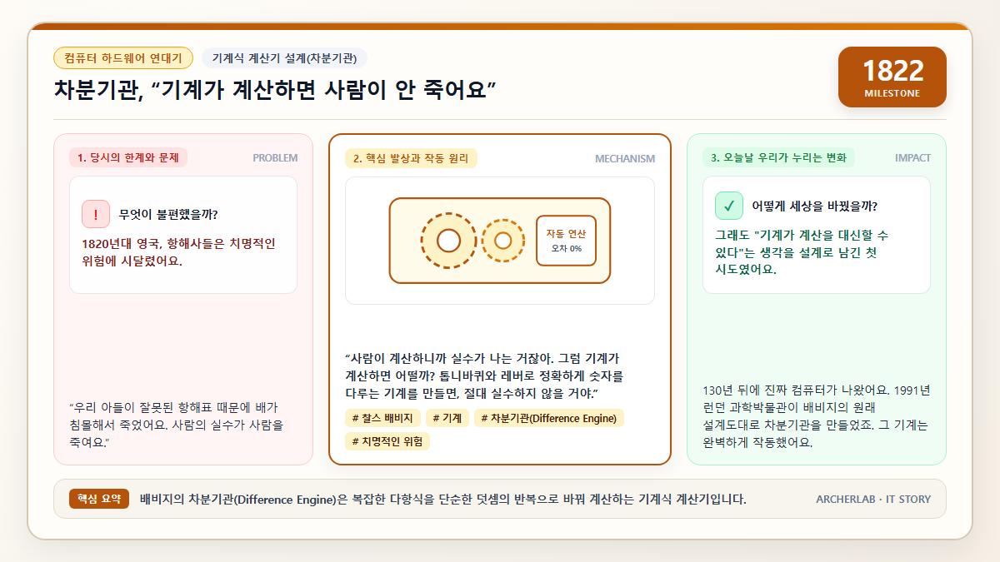

1822
차분기관, “기계가 계산하면 사람이 안 죽어요”
잘못된 항해표 때문에 배가 침몰하던 시절, 영국 수학자 찰스 배비지가 “톱니바퀴와 레버로 정확히 숫자를 다루는 기계”를 설계했어요.
130년 뒤에 나올 컴퓨터보다 앞선 설계였죠.

1820년대 영국에서 항해사들은 늘 큰 위험을 안고 바다에 나갔어요.
바다에서 배의 위치를 정확히 알려면 별의 위치가 적힌 두꺼운 표(천문 항해표)가 필요했는데, 당시에는 이 표를 사람이 일일이 손으로 계산해서 만들었거든요.
그러다 보니 오타가 나거나 잘못 계산한 숫자가 들어갔어요. 항해사가 잘못된 표를 믿고 가다가 배가 암초에 걸리는 사고가 끊이지 않았고 선원 가족들도 비통해했죠.
"잘못 계산된 항해표 때문에 아들이 탄 배가 가라앉았어요. 사람의 계산 실수가 사람 목숨을 앗아갑니다."
케임브리지의 수학자 찰스 배비지는 오류투성이 표를 들여다보다가 과감한 발상을 떠올렸어요.
"사람이 손으로 계산하니까 실수가 나는 거잖아. 그럼 기계가 계산하면 어떨까? 톱니바퀴와 레버로 정확하게 숫자를 다루는 기계를 만들면 절대 실수하지 않을 거야."
1822년 그는 차분기관(Difference Engine) 설계를 발표했어요. 수만 개의 톱니바퀴가 정밀하게 맞물려 복잡한 수식(다항식) 계산을 덧셈만으로 자동 수행하는 거대한 기계였죠.
영국 정부도 이 발상의 가치를 알아보고 예산을 지원했고 시연 모형을 본 동료 수학자들도 기대를 걸었어요.
"이 기계가 만들어지면 항해표 계산을 자동화할 수 있어요. 사람의 실수가 사라지니 수많은 선원의 목숨을 구할 수 있습니다!"
하지만 당시 금속 가공 기술로는 정밀 부품을 깎기가 너무 어려워서 배비지는 평생 이 기계를 완성하지 못했어요.
그래도 "기계가 계산을 대신할 수 있다"는 생각을 구체적인 설계도로 남긴 첫 시도였어요.
실제 컴퓨터는 130년 뒤에 나왔고 1991년 런던 과학박물관이 배비지의 원래 설계도대로 조립한 차분기관은 오차 없이 정확하게 작동했어요.
배비지의 차분기관(Difference Engine)은 복잡한 수식(다항식)을 이웃한 숫자들의 차이(차분)로 쪼개어 단순한 덧셈의 반복으로 바꿔 계산하는 기계식 계산기입니다.
금속 기어와 축이 맞물려 돌아가며 숫자와 연산을 처리합니다.
비록 당대에 실물로 완성되지는 못했으나 계산 절차를 기계에 맡긴다는 생각을 설계로 남겨 현대 컴퓨터 구조의 사상적 토대가 되었습니다.